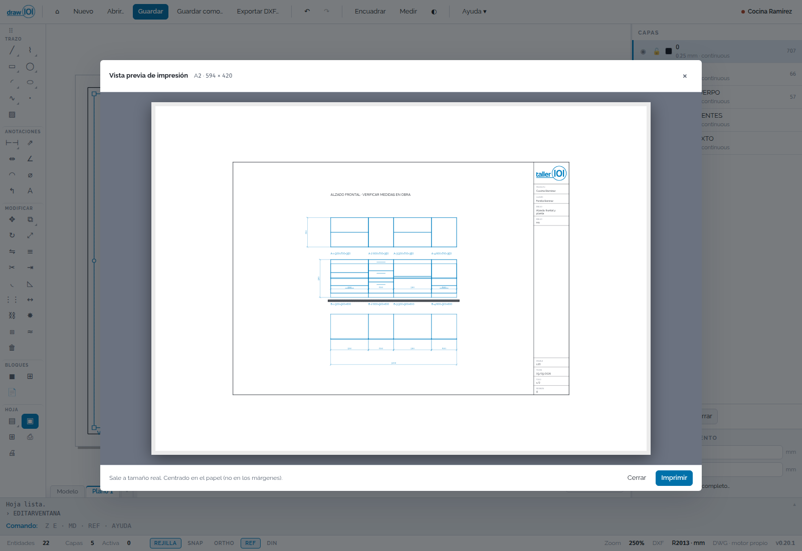

CAD 2D para taller de muebles y despachos: abre el DWG, dibuja, acota e imprime.
Uso interno · v1 en curso · Windows · macOS en preparación

Abre el plano del arquitecto tal cual —capas, bloques, atributos y hojas— y saca de ahí los planos de fabricación del taller. Comandos de AutoCAD, menú radial para lo de todos los días, cotas asociativas, hojas A4 a A0 con pie de plano propio e impresión a PDF a tamaño real. Sin suscripción: se instala y se usa.
Por qué sirve
De R2000 a R2018. Lo que no reconoce lo conserva y lo devuelve igual que entró.
Los comandos de AutoCAD que ya usas, y un menú radial con clic derecho: lo de todos los días queda donde está el cursor.
El plano del arquitecto entra entero; pan y zoom navegan sobre él sin redibujarlo.
Hojas con pie de plano, escala de lista y vista previa antes de mandar a imprimir.
Importa las cocinas de nest101, las acota solas y las actualiza.
Avisa y se actualiza. Guarda solo y recupera el trabajo si se cierra de golpe.
La hoja con pie de plano, lista para imprimir

La galería de achurados, con vista previa al momento

Las propiedades del objeto, al momento

La vista previa antes de mandar a imprimir

Qué trae
¿Le sirve a tu taller?
Te enseñamos draw101 con datos de una obra de verdad.